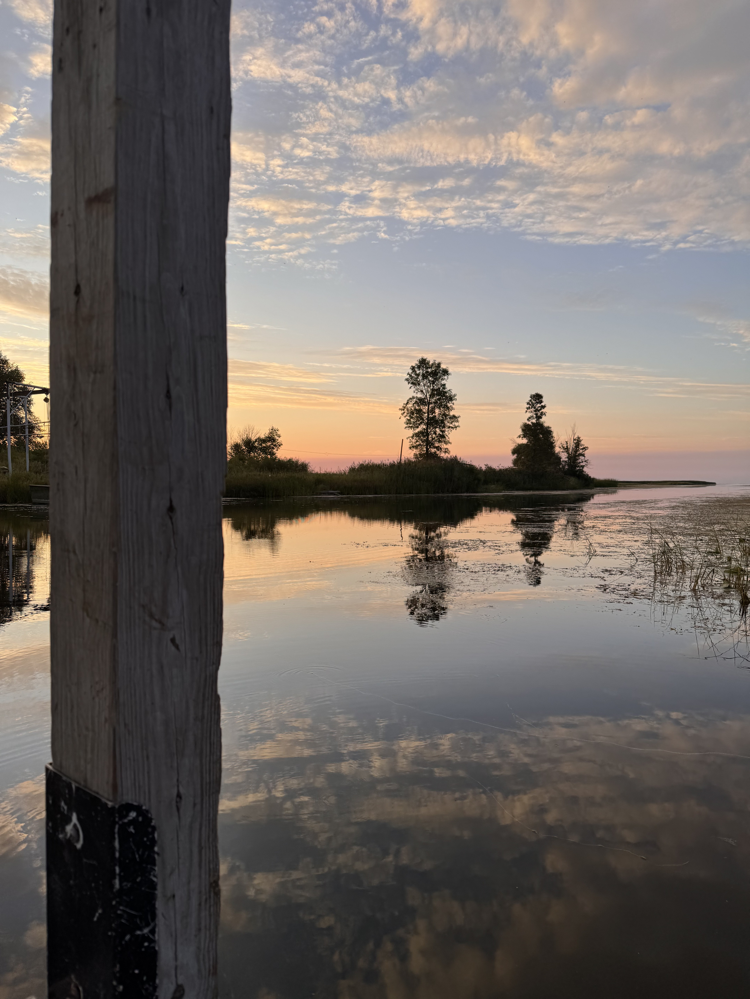

Welcome to Fishing in Michigan, your guide to recreational fishing! Whether you’re a lifelong angler or just casting your first line, this site is here to help you make the most of Michigan’s incredible lakes, rivers, and streams. Here you’ll find guides on how to fish, tips on where to go, and information to help identify local fish species. Fishing is about more than just the catch - it’s also about connecting with nature and understanding the ecosystems that make Michigan’s waters so unique. That’s why this site includes content on environmental issues, from protecting native habitats to learning about invasive species and the overall health of aquatic life. This site is all about exploring Michigan’s lakes, rivers, and streams, discovering what’s biting, and learning how to fish responsibly while enjoying the outdoors. Grab a rod, explore a new spot, and enjoy everything Michigan’s waters have to offer. Happy fishing!
